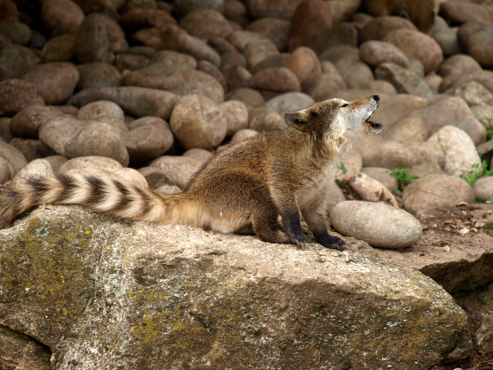

Tags: Photoshop, Creative, Wolfbear
Op deze afbeelding is er gewerkt met morphing, dit is een soort van techniek waarmee je van 2 verschillende items, mensen of dieren 1 nieuw item kan maken. Ik heb ervoor gekozen om een morph te maken van 2 verschillende dieren namelijk van een neusbeer en een wolf.
Wanneer je een morph wil maken, is het zeer belangrijk dat de kwaliteit van je foto's zeer goed is. Het is ook van zeer groot belang dat je werkt met afbeeldingen waarvan bepaalde karakteristiek zoals bijvoorbeeld de kijkrichting en dergelijke overeen komen.
Anders is height moeilijk om een mooie en realistische morph te bekomen. Wanneer je met slechtere foto's gaat werken bekom je geen mooi resultaat. Crappy input is crappy output.
Wanneer je gaat morphen is het zeer belangrijk dat je zeer nauwkeurig te werk gaat en dat je ook zeer goede selecties maakt. Hiervoor moet je heel geduldig zijn, maar het harde werk is zeker de moeite waard wanneer je het resultaat te zien krijgt.
Ik ben persoonlijk zeer trots op het bekomen resultaat. Ik vind dat je amper ziet dat het geen echt bestaand wezen is. Er is met veel geduld en nauwkeurigheid te werk gegaan, en dat is duidelijk te merken aan het eindresultaat.
Hier is nog een voorbeeld van morphing. Hier is er een combinatie tussen een nijlpaard en een hagedis gemaakt. Hier is er ook een zeer mooi resultaat, maar het is wel duidelijker zichtbaar dat het geen realistisch beest is.
Bij deze morph is het de bedoeling dat je op het einde bij de afwerking, ook de structuur van del hagedis gaat kopiëren. Zo lijkt het resultaat veel realistischer.
Wanneer je interesse hebt om zelf eens een morph te maken, dan kan je altijd een leuke tutorial zoeken op het internet. Zo kan je op zoek gaan naar uitgeschreven tutorials, maar ook naar filmpjes zoals op Lynda.com en youtube.
Auteur: Gaetana Vanbroeckhoven
Hallo, ik ben een zeer enthousiaste student Grafische & Digitale Media aan de Artesis Plantijn Hogeschool. Ik zit momenteel in mijn eerste jaar, maar ik heb in 2015 al een diploma Comunicatiemanagement behaald.
Op de blog vind je al mijn creaties terug. De bedoeling van deze blog is om andere te inspireren om ook creatief bezig te zijn net zoals...
Indien je me wil contacteren kan dit altijd via mail of social media. Er is ook de optie om een contactformulier in te vullen.
Ik zal altijd zo snel mogelijk als ik kan jullie mail of vraag proberen te beantwoorden.
Alsvast bedankt voor jullie interesse en hopelijk kunnen jullie veel inspiratie op doen op deze blog.
Liefs, Gaetana xxx